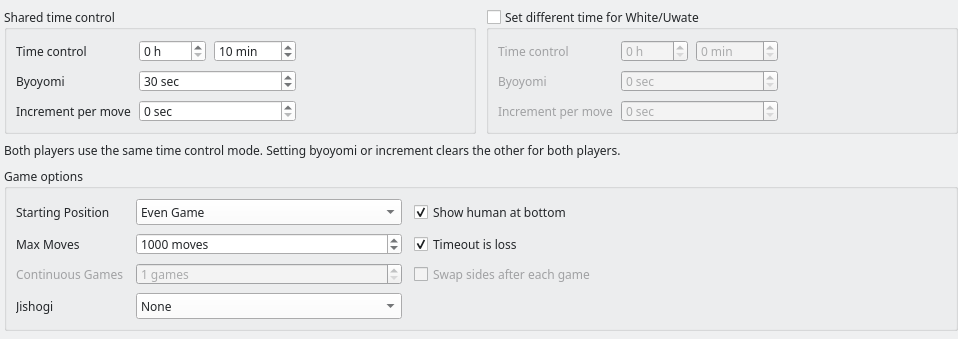
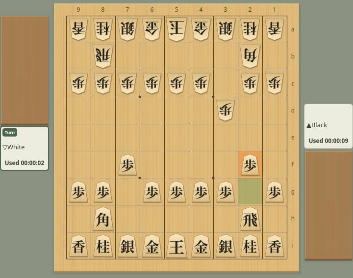
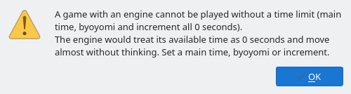
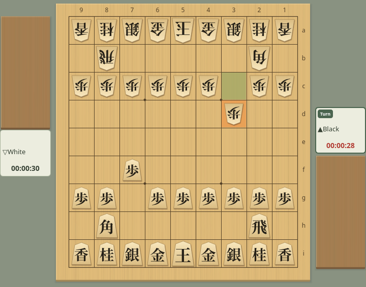

Time Control and Clocks
The time settings in the game dialog and how the clocks run during a game
Screenshots were captured on Linux with the English interface.
Time Settings
Set the main time, byoyomi, and per-move increment in the game dialog
The time settings are in the middle of the game dialog (Game → Game…). Every time value applies to each player individually.
- Time control: The main time each player can use for the whole game, set in hours and minutes.
- Byoyomi: The seconds available for each move after the main time is used up. Unused seconds do not carry over to the next move.
- Increment per move: A Fischer increment. These seconds are added to the remaining time for the first move and after every move. Unused time accumulates.
- Set different time for White/Uwate: When unchecked, the values on the left apply to both players (headed “Shared time control”). When checked, you can set White/Uwate's time on the right, and the left heading changes to “Black / Shitate time control”.
- Timeout is loss (under Game options): When checked, a player who uses up all available time loses on time. When unchecked, the game continues even after time runs out.


Time settings: 10 minutes plus 30 seconds of byoyomi for both players
Both players use the same method. Entering a value in either byoyomi box sets both increments to 0, and entering an increment sets both byoyomi values to 0. This is what the dialog's note “Both players use the same time control mode. Setting byoyomi or increment clears the other for both players.” means. You cannot give byoyomi to Black and an increment to White.
When each side has its own time, you can set the main time, byoyomi length, and increment length separately, but the method is still shared.
When the two sides have different times, the game information and the saved record show both under “Time control”, for example “Black 10:00+30 / White 05:00+30” (“Shitate” and “Uwate” in handicap games). In consecutive engine games with “Swap sides after each game” on, the times move with the engines, so each engine keeps the same time in every game.
How Byoyomi and Increment Work
How the time you set runs down and is added during a game
Only the player to move uses time, and nothing is added after a move. When the main time runs out, that player is out of time. For example, with 5 minutes of main time the clock starts at “00:05:00”, and after a 3-second first move it shows “00:04:57”.
While main time remains, the clock counts down the main time. If it runs out while you are thinking, byoyomi starts in the middle of that move, and the time already spent on the move still counts.
In byoyomi, if you move before the byoyomi seconds run out, the next move gets the full byoyomi again; unused seconds do not accumulate. The time is up the moment the byoyomi limit is reached (with 30 seconds of byoyomi, you must move in under 30 seconds). With a main time of 0, every move from the first has, say, 30 seconds.
At the start of the game, the increment is added to the main time for the first move. After that, every move made in time adds the increment for the next move. Your opponent's moves never add time to your clock.
| Setting or action | Remaining time |
|---|---|
| Start with 0 main time and a 10-second increment | 10 sec |
| Play the first move in 3 seconds | 10 − 3 + 10 = 17 sec |
| Play your next move in 5 seconds | 17 − 5 + 10 = 22 sec |
| Start with 5 minutes of main time and a 10-second increment | 5 min 10 sec |
Unlimited Time
Set main time, byoyomi, and increment all to 0 to play without watching the clock
When main time, byoyomi, and increment are all 0 for both players, the game has no time limit. No one loses on time, even with “Timeout is loss” checked.
Only human vs. human games can use unlimited time. Games with an engine cannot start, as described in Settings That Cannot Start a Game below.
In an unlimited-time game, the clocks show the total time each player has used instead of the time remaining, such as “Used 00:00:09”. During your turn, the time spent on the current move is included. After a move, the value matches that player's total in the Time column of the game record.


Unlimited time: each clock shows the total time used (Black 9 s, White 2 s)
Fractions of a second are dropped. The warning colors for low time are not used.
Settings That Cannot Start a Game
Some time settings show a warning when you click Start Game
With the following settings, clicking “Start Game” shows a “Time Settings” warning and the game does not start. The dialog stays open, so change the time and click “Start Game” again. Your settings are not saved when the warning appears.
| Setting | Warning and how to fix it |
|---|---|
| Only one player has main time, byoyomi, and increment all at 0 (with “Set different time for White/Uwate” checked) | You cannot give unlimited time to only one player. Set a time for both players. In a human vs. human game, set both to 0 to play without a time limit. |
| A game with an engine in which both players have main time, byoyomi, and increment all at 0 | The engine would treat its available time as 0 seconds and move almost without thinking, so unlimited time is not allowed. Set a main time, byoyomi, or increment. |


The warning when starting a game with an engine and no time limit
The first time you open the game dialog, all times are 0, and if an engine is registered, White/Uwate is set to that engine. Clicking “Start Game” as is shows this warning, so set a main time or byoyomi first. The time you set is used again next time.
Clock Display
The player cards beside the board show each clock as hours:minutes:seconds
In a game with a time limit, the clocks show the time remaining. Only the clock of the player to move runs. Fractions of a second are rounded up, so 7.2 seconds left shows as “00:00:08”, and the time is up when the clock reaches “00:00:00”.
In a byoyomi game, the clock shows the byoyomi seconds left once byoyomi starts. After that, while the opponent is thinking, the clock shows the byoyomi you will have for your next move (“00:00:30” with 30 seconds of byoyomi). With 0 main time, the clocks show this from the start. The same applies to network (CSA) games.
The text of the clock of the player to move changes color when time runs low.
- Games without byoyomi: With 10 seconds or less left, the text uses the “Text with 10 seconds or less” color; with 5 seconds or less, the “Text in byoyomi / 5 seconds or less” color.
- Games with byoyomi: With 10 seconds or less of main time left, the text uses the “Text with 10 seconds or less” color; once byoyomi starts, the “Text in byoyomi / 5 seconds or less” color.


In byoyomi: the clock of the player to move uses the warning color
You can change both colors on the Details tab of Game Appearance. The colors do not change in unlimited-time games.
When you abort a game, the clocks stop, and Resume continues from the time remaining at that point (Aborting and Resuming a Game).
On your turn, Game → Take Back takes back your last move and the reply to it, and the clocks return to their state when you started that move. The time used for the moves taken back, and the time you spent after the reply, is given back, and your thinking time is counted again from the moment you choose Take Back. Choosing it again takes back two more moves each time, as far back as the starting position of the game.